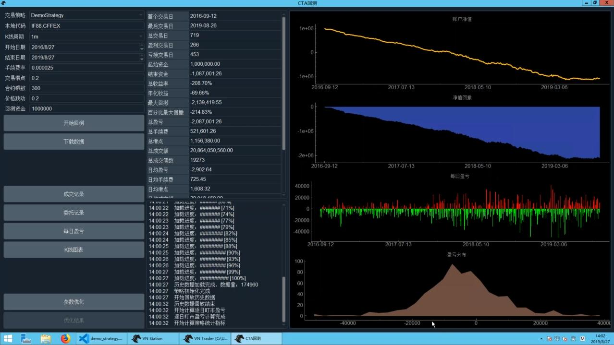

<!DOCTYPE html>
<html>
<head><meta name="generator" content="Hexo 3.9.0">
  <meta charset="utf-8">
  
  <meta http-equiv="X-UA-Compatible" content="IE=edge">
  <title>【课程笔记】全实战进阶系列-CTA策略-基础操作 | lostleaf&#39;s Blog</title>
  <meta name="viewport" content="width=device-width, initial-scale=1, maximum-scale=1">
  <meta name="description" content="全实战进阶系列-CTA策略, 平台小鹅通，by 用 Python 的交易员">
<meta name="keywords" content="Quant,全实战进阶系列-CTA策略">
<meta property="og:type" content="article">
<meta property="og:title" content="【课程笔记】全实战进阶系列-CTA策略-基础操作">
<meta property="og:url" content="http://yoursite.com/2019/09/12/全实战进阶系列-CTA策略-基础操作/index.html">
<meta property="og:site_name" content="lostleaf&#39;s Blog">
<meta property="og:description" content="全实战进阶系列-CTA策略, 平台小鹅通，by 用 Python 的交易员">
<meta property="og:locale" content="en">
<meta property="og:image" content="http://yoursite.com/2019/09/12/全实战进阶系列-CTA策略-基础操作/demo_backtesting.jpg">
<meta property="og:updated_time" content="2019-09-19T01:58:36.385Z">
<meta name="twitter:card" content="summary">
<meta name="twitter:title" content="【课程笔记】全实战进阶系列-CTA策略-基础操作">
<meta name="twitter:description" content="全实战进阶系列-CTA策略, 平台小鹅通，by 用 Python 的交易员">
<meta name="twitter:image" content="http://yoursite.com/2019/09/12/全实战进阶系列-CTA策略-基础操作/demo_backtesting.jpg">
  
    <link rel="alternative" href="/atom.xml" title="lostleaf&#39;s Blog" type="application/atom+xml">
  
  
    <link rel="icon" href="/favicon.png">
  
  <link rel="stylesheet" href="/css/style.css">
</head>
</html>
<body>
  <div id="container">
    <div class="left-col">
    <div class="overlay"></div>
<div class="intrude-less">
	<header id="header" class="inner">
		<a href="/" class="profilepic">
			
			
			
		</a>

		<hgroup>
		  <h1 class="header-author"><a href="/">lostleaf</a></h1>
		</hgroup>

		

		
			<div class="switch-btn">
				<div class="icon">
					<div class="icon-ctn">
						<div class="icon-wrap icon-house" data-idx="0">
							<div class="birdhouse"></div>
							<div class="birdhouse_holes"></div>
						</div>
						<div class="icon-wrap icon-ribbon hide" data-idx="1">
							<div class="ribbon"></div>
						</div>
						
						
						<div class="icon-wrap icon-me hide" data-idx="3">
							<div class="user"></div>
							<div class="shoulder"></div>
						</div>
						
					</div>
					
				</div>
				<div class="tips-box hide">
					<div class="tips-arrow"></div>
					<ul class="tips-inner">
						<li>Menu</li>
						<li>Tags</li>
						
						
						<li>About</li>
						
					</ul>
				</div>
			</div>
		

		<div class="switch-area">
			<div class="switch-wrap">
				<section class="switch-part switch-part1">
					<nav class="header-menu">
						<ul>
						
							<li><a href="/">Home</a></li>
				        
							<li><a href="/archives">Archives</a></li>
				        
						</ul>
					</nav>
					<nav class="header-nav">
						<div class="social">
							
								<a class="github" target="_blank" href="https://github.com/lostleaf" title="github">github</a>
					        
								<a class="linkedin" target="_blank" href="https://www.linkedin.com/in/qinglin-li-29b23364" title="linkedin">linkedin</a>
					        
								<a class="zhihu" target="_blank" href="https://www.zhihu.com/people/lostleaf" title="zhihu">zhihu</a>
					        
								<a class="twitter" target="_blank" href="https://twitter.com/L0STLEAF" title="twitter">twitter</a>
					        
						</div>
					</nav>
				</section>
				
				
				<section class="switch-part switch-part2">
					<div class="widget tagcloud" id="js-tagcloud">
						<a href="/tags/AtrRsi/" style="font-size: 10px;">AtrRsi</a> <a href="/tags/C/" style="font-size: 10px;">C++</a> <a href="/tags/Compiler/" style="font-size: 10px;">Compiler</a> <a href="/tags/Conference/" style="font-size: 10px;">Conference</a> <a href="/tags/Linux/" style="font-size: 10px;">Linux</a> <a href="/tags/Machine-Learning/" style="font-size: 10px;">Machine Learning</a> <a href="/tags/Quant/" style="font-size: 20px;">Quant</a> <a href="/tags/Sci-Fi/" style="font-size: 12.5px;">Sci-Fi</a> <a href="/tags/Vim/" style="font-size: 10px;">Vim</a> <a href="/tags/Zhihu/" style="font-size: 15px;">Zhihu</a> <a href="/tags/全实战成长系列-30堂实战课跑通量化交易/" style="font-size: 10px;">全实战成长系列-30堂实战课跑通量化交易</a> <a href="/tags/全实战进阶系列-CTA策略/" style="font-size: 17.5px;">全实战进阶系列-CTA策略</a>
					</div>
				</section>
				
				
				

				
				
				<section class="switch-part switch-part3">
				
					<div id="js-aboutme">Machine Learning Enthusiast / Sci-Fi Fan / Programmer</div>
				</section>
				
			</div>
		</div>
	</header>				
</div>

    </div>
    <div class="mid-col">
      <nav id="mobile-nav">
  	<div class="overlay">
  		<div class="slider-trigger"></div>
  		<h1 class="header-author js-mobile-header hide">lostleaf</h1>
  	</div>
	<div class="intrude-less">
		<header id="header" class="inner">
			<div class="profilepic">
			
				
			
			</div>
			<hgroup>
			  <h1 class="header-author">lostleaf</h1>
			</hgroup>
			
			<nav class="header-menu">
				<ul>
				
					<li><a href="/">Home</a></li>
		        
					<li><a href="/archives">Archives</a></li>
		        
		        <div class="clearfix"></div>
				</ul>
			</nav>
			<nav class="header-nav">
				<div class="social">
					
						<a class="github" target="_blank" href="https://github.com/lostleaf" title="github">github</a>
			        
						<a class="linkedin" target="_blank" href="https://www.linkedin.com/in/qinglin-li-29b23364" title="linkedin">linkedin</a>
			        
						<a class="zhihu" target="_blank" href="https://www.zhihu.com/people/lostleaf" title="zhihu">zhihu</a>
			        
						<a class="twitter" target="_blank" href="https://twitter.com/L0STLEAF" title="twitter">twitter</a>
			        
				</div>
			</nav>
		</header>				
	</div>
</nav>

      <div class="body-wrap"><article id="post-全实战进阶系列-CTA策略-基础操作" class="article article-type-post" itemscope itemprop="blogPost">
  
    <div class="article-meta">
      <a href="/2019/09/12/全实战进阶系列-CTA策略-基础操作/" class="article-date">
  	<time datetime="2019-09-11T19:52:50.000Z" itemprop="datePublished">2019-09-11</time>
</a>
    </div>
  
  <div class="article-inner">
    
      <input type="hidden" class="isFancy" />
    
    
      <header class="article-header">
        
  
    <h1 class="article-title" itemprop="name">
      【课程笔记】全实战进阶系列-CTA策略-基础操作
    </h1>
  

      </header>
      
      <div class="article-info article-info-post">
        
	<div class="article-tag tagcloud">
		<ul class="article-tag-list"><li class="article-tag-list-item"><a class="article-tag-list-link" href="/tags/Quant/">Quant</a></li><li class="article-tag-list-item"><a class="article-tag-list-link" href="/tags/全实战进阶系列-CTA策略/">全实战进阶系列-CTA策略</a></li></ul>
	</div>

        

        <div class="clearfix"></div>
      </div>
      
    
    <div class="article-entry" itemprop="articleBody">
      
        <p><a href="https://appszu5scwd6134.h5.xiaoeknow.com/" target="_blank" rel="noopener">全实战进阶系列-CTA策略</a>, 平台小鹅通，by 用 Python 的交易员</p>
<a id="more"></a>
<p>进阶课程计划</p>
<ul>
<li>CTA：50集，两个月</li>
<li>价差交易</li>
<li>算法交易</li>
<li>波动率交易</li>
<li>复杂系统：分布式部署</li>
</ul>
<p>通过vnpy公众号问问题</p>
<h2 id="开发环境"><a href="#开发环境" class="headerlink" title="开发环境"></a>开发环境</h2><p>云：</p>
<ul>
<li>阿里云上海二区</li>
<li>2 Core 4G</li>
<li>Windows 2012 数据中心版</li>
<li>VnStudio</li>
<li>VsCode</li>
</ul>
<p>或本地Win10</p>
<h2 id="策略模板"><a href="#策略模板" class="headerlink" title="策略模板"></a>策略模板</h2><p>继承 <code>CtaTemplate</code></p>
<p><code>Ctrl-k Ctrl-r</code> 折叠所有函数</p>
<ul>
<li><code>parameters</code>: 策略参数的名称，外部指定的数值, e.g. ma_windows</li>
<li><code>variables</code>: 策略变量的名称, 内部计算的数值，e.g. ma_value</li>
<li>类型只支持 <code>int</code>, <code>str</code>, <code>float</code>, <code>bool</code></li>
<li><code>list</code>, <code>dict</code> 等放到 <code>__init__</code></li>
</ul>
<p>所有加了 <code>@virtual</code> 的，都是 callback，用户自己实现</p>
<ul>
<li><code>on_init</code>: 在图形化界面上点了启动按钮</li>
<li><code>on_start</code>: 点了启动按钮</li>
<li><code>on_stop</code>: 点了停止按钮</li>
<li><code>on_tick</code>: 收到 tick 数据</li>
<li><code>on_bar</code>: 收到 K 线数据</li>
<li><code>on_trade</code>: 成交</li>
<li><code>on_order</code>: 委托推送，订单状态变化</li>
<li><code>on_stop_order</code>: 停止单推送</li>
</ul>
<p>交易类函数: <code>buy</code>, <code>sell</code>, <code>short</code>, <code>cover</code>, <code>send_order</code>, <code>cancel_order</code>, <code>cancel_all</code></p>
<p>交易以外功能函数: <code>write_log</code>, <code>get_engine_type</code>(区分回测和实盘), <code>load_bar</code>, <code>load_tick</code>, <code>put_event</code>(通知图形界面变化), <code>send_email</code>, <code>sync_data</code>(状态写入硬盘，恢复交易状态)</p>
<h2 id="策略开发"><a href="#策略开发" class="headerlink" title="策略开发"></a>策略开发</h2><p>策略目录 <code>~/strategies</code>，双均线为例</p>
<p>首先定义参数和变量</p>
<figure class="highlight python"><table><tr><td class="gutter"><pre><span class="line">1</span><br><span class="line">2</span><br><span class="line">3</span><br><span class="line">4</span><br><span class="line">5</span><br><span class="line">6</span><br><span class="line">7</span><br><span class="line">8</span><br><span class="line">9</span><br><span class="line">10</span><br><span class="line">11</span><br><span class="line">12</span><br><span class="line">13</span><br><span class="line">14</span><br></pre></td><td class="code"><pre><span class="line"><span class="class"><span class="keyword">class</span> <span class="title">DemoStrategy</span><span class="params">(CTaTemplate)</span>:</span></span><br><span class="line">    <span class="comment"># params</span></span><br><span class="line">    fast_window, slow_window = <span class="number">10</span>, <span class="number">20</span></span><br><span class="line"></span><br><span class="line">    <span class="comment"># vars</span></span><br><span class="line">    fast_ma0, fast_ma1, slow_ma0, slow_ma1 = <span class="number">0.</span>, <span class="number">0.</span>, <span class="number">0.</span>, <span class="number">0.</span></span><br><span class="line"></span><br><span class="line">    parameters = [<span class="string">'fast_window'</span>, <span class="string">'slow_windos'</span>]</span><br><span class="line">    variables = [<span class="string">'fast_ma0'</span>, <span class="string">'fast_ma1'</span>, <span class="string">'slow_ma0'</span>, <span class="string">'slow_ma1'</span>]</span><br><span class="line">    </span><br><span class="line">    <span class="function"><span class="keyword">def</span> <span class="title">__init__</span><span class="params">(self, ...)</span>:</span></span><br><span class="line">        super().__init__(self, ...)</span><br><span class="line">        self.bg = BarGenerator(self.on_bar)</span><br><span class="line">        self.am = ArrayManager() <span class="comment"># default size 100</span></span><br></pre></td></tr></table></figure>
<p>初始化<br><figure class="highlight python"><table><tr><td class="gutter"><pre><span class="line">1</span><br><span class="line">2</span><br><span class="line">3</span><br><span class="line">4</span><br><span class="line">5</span><br><span class="line">6</span><br><span class="line">7</span><br><span class="line">8</span><br><span class="line">9</span><br></pre></td><td class="code"><pre><span class="line"><span class="function"><span class="keyword">def</span> <span class="title">on_init</span><span class="params">(self)</span>:</span></span><br><span class="line">    self.write_log(<span class="string">'Initialized'</span>)</span><br><span class="line">    self.load_bar(<span class="number">10</span>) <span class="comment"># 10 days</span></span><br><span class="line"></span><br><span class="line"><span class="function"><span class="keyword">def</span> <span class="title">on_start</span><span class="params">(self)</span>:</span></span><br><span class="line">    self.write_log(<span class="string">'Started'</span>)</span><br><span class="line"></span><br><span class="line"><span class="function"><span class="keyword">def</span> <span class="title">on_stop</span><span class="params">(self)</span>:</span></span><br><span class="line">    self.write_log(<span class="string">'Stopped'</span>)</span><br></pre></td></tr></table></figure></p>
<p>双均线逻辑<br><figure class="highlight python"><table><tr><td class="gutter"><pre><span class="line">1</span><br><span class="line">2</span><br><span class="line">3</span><br><span class="line">4</span><br><span class="line">5</span><br><span class="line">6</span><br><span class="line">7</span><br><span class="line">8</span><br><span class="line">9</span><br><span class="line">10</span><br><span class="line">11</span><br><span class="line">12</span><br><span class="line">13</span><br><span class="line">14</span><br><span class="line">15</span><br><span class="line">16</span><br><span class="line">17</span><br><span class="line">18</span><br><span class="line">19</span><br><span class="line">20</span><br><span class="line">21</span><br><span class="line">22</span><br><span class="line">23</span><br><span class="line">24</span><br><span class="line">25</span><br><span class="line">26</span><br><span class="line">27</span><br><span class="line">28</span><br><span class="line">29</span><br><span class="line">30</span><br></pre></td><td class="code"><pre><span class="line"><span class="function"><span class="keyword">def</span> <span class="title">on_bar</span><span class="params">(self, bar: BarData)</span>:</span></span><br><span class="line">    am = self.am</span><br><span class="line">    am.update_bar(bar)</span><br><span class="line">    <span class="keyword">if</span> <span class="keyword">not</span> am.inited:</span><br><span class="line">        <span class="keyword">return</span></span><br><span class="line">    fast_ma = am.sma(self.fast_window, array=<span class="literal">True</span>)</span><br><span class="line">    self.fast_ma0 = fast_ma[<span class="number">-1</span>]</span><br><span class="line">    self.fast_ma1 = fast_ma[<span class="number">-2</span>]</span><br><span class="line">    slow_ma = am.sma(self.slow_window, array=<span class="literal">True</span>)</span><br><span class="line">    self.slow_ma0 = slow_ma[<span class="number">-1</span>]</span><br><span class="line">    self.slow_ma1 = slow_ma[<span class="number">-2</span>]</span><br><span class="line"></span><br><span class="line">    <span class="comment"># 金叉</span></span><br><span class="line">    cross_over = (self.fast_ma0 &gt;= self.slow_ma0) <span class="keyword">and</span> (self.fast_ma1 &lt; self.slow_ma1)</span><br><span class="line"></span><br><span class="line">    <span class="comment"># 死叉</span></span><br><span class="line">    cross_below = (self.fast_ma0 &lt;= self.slow_ma0) <span class="keyword">and</span> (self.fast_ma1 &gt; self.slow_ma1)</span><br><span class="line"></span><br><span class="line">    <span class="keyword">if</span> cross_over:</span><br><span class="line">        price = bar.close_price + <span class="number">5</span> <span class="comment"># just for example</span></span><br><span class="line">        <span class="keyword">if</span> self.pos &lt; <span class="number">0</span>:</span><br><span class="line">            self.cover(price, <span class="number">1</span>)</span><br><span class="line">        self.buy(price, <span class="number">1</span>)</span><br><span class="line">    <span class="keyword">elif</span> cross_below:</span><br><span class="line">        price = bar.close_price - <span class="number">5</span> <span class="comment"># just for example</span></span><br><span class="line">        <span class="keyword">if</span> self.pos &gt; <span class="number">0</span>:</span><br><span class="line">            self.sell(price, <span class="number">1</span>)</span><br><span class="line">        self.short(price, <span class="number">1</span>)</span><br><span class="line">    </span><br><span class="line">    self.put_event() <span class="comment"># update GUI</span></span><br></pre></td></tr></table></figure></p>
<p>实盘 K 线合成<br><figure class="highlight python"><table><tr><td class="gutter"><pre><span class="line">1</span><br><span class="line">2</span><br></pre></td><td class="code"><pre><span class="line"><span class="function"><span class="keyword">def</span> <span class="title">on_tick</span><span class="params">(self, tick: TickData)</span>:</span></span><br><span class="line">    self.bg.update_tick(tick)</span><br></pre></td></tr></table></figure></p>
<h2 id="历史回测"><a href="#历史回测" class="headerlink" title="历史回测"></a>历史回测</h2><ul>
<li><code>VnStation</code> 加载 CTA 策略，CTA 回测</li>
<li>点配置，配置 rqdate 账号密码，重启</li>
<li>点 CTA 回测，看到 RQData 数据初始化成功</li>
<li>交易策略，选DemoStrategy，开始回测，设置参数</li>
<li>亏钱策略</li>
</ul>
<p></p>
<h2 id="参数优化"><a href="#参数优化" class="headerlink" title="参数优化"></a>参数优化</h2><ul>
<li>去掉手续费，不那么亏钱</li>
<li>回测设置，合约代码，手续费滑点，开始结束时间</li>
<li>点参数优化，设置搜索区间，多进程优化，网格搜索</li>
<li>优化完成，点优化结果，排序，寻找参数平原</li>
<li>双均线策略在 IF88 上最好的参数为 <code>fast_window=6, slow_window=80</code>(无手续费滑点)</li>
</ul>
<h2 id="自动交易-基于-simnow"><a href="#自动交易-基于-simnow" class="headerlink" title="自动交易(基于 simnow)"></a>自动交易(基于 simnow)</h2><ul>
<li>加载 CTP gateway</li>
<li>连接 7*24 小时环境</li>
<li>若连接成功，则显示合约信息查询成功、资金信息等</li>
<li>点CTA策略，实盘自动交易<ul>
<li>strategy_name: 实例名称</li>
<li>vt_symbol: IF1909.CFFEX</li>
<li>… 其他 parameters</li>
</ul>
</li>
<li>初始化-&gt;启动 …. 收盘之后-&gt;结束, variables 缓存到 cta_strategy_data.json</li>
</ul>

      
    </div>
    
  </div>
  
    
<nav id="article-nav">
  
    <a href="/2019/09/16/全实战进阶系列-CTA策略-K线逻辑/" id="article-nav-newer" class="article-nav-link-wrap">
      <strong class="article-nav-caption"><</strong>
      <div class="article-nav-title">
        
          【课程笔记】全实战进阶系列-CTA策略-K线逻辑
        
      </div>
    </a>
  
  
    <a href="/2019/09/11/带你重新认识海龟交易策略/" id="article-nav-older" class="article-nav-link-wrap">
      <div class="article-nav-title">【live笔记】带你重新认识海龟交易策略</div>
      <strong class="article-nav-caption">></strong>
    </a>
  
</nav>

  
</article>


<div class="share_jia">
	<!-- JiaThis Button BEGIN -->
	<div class="jiathis_style">
		<span class="jiathis_txt">Share to: &nbsp; </span>
		<a class="jiathis_button_facebook"></a> 
    <a class="jiathis_button_twitter"></a>
    <a class="jiathis_button_plus"></a> 
    <a class="jiathis_button_tsina"></a>
		<a class="jiathis_button_cqq"></a>
		<a class="jiathis_button_douban"></a>
		<a class="jiathis_button_weixin"></a>
		<a class="jiathis_button_tumblr"></a>
    <a href="http://www.jiathis.com/share" class="jiathis jiathis_txt jtico jtico_jiathis" target="_blank"></a>
	</div>
	<script type="text/javascript" src="http://v3.jiathis.com/code/jia.js?uid=1405949716054953" charset="utf-8"></script>
	<!-- JiaThis Button END -->
</div>


</div>
      <footer id="footer">
  <div class="outer">
    <div id="footer-info">
    	<div class="footer-left">
    		&copy; 2019 lostleaf
    	</div>
      	<div class="footer-right">
      		<a href="http://hexo.io/" target="_blank">Hexo</a>  Theme <a href="https://github.com/litten/hexo-theme-yilia" target="_blank">Yilia</a> by Litten
      	</div>
    </div>
  </div>
</footer>
    </div>
    
  <link rel="stylesheet" href="/fancybox/jquery.fancybox.css">


<script>
	var yiliaConfig = {
		fancybox: true,
		mathjax: true,
		animate: true,
		isHome: false,
		isPost: true,
		isArchive: false,
		isTag: false,
		isCategory: false,
		open_in_new: false
	}
</script>
<script src="http://7.url.cn/edu/jslib/comb/require-2.1.6,jquery-1.9.1.min.js"></script>
<script src="/js/main.js"></script>


<script type="text/x-mathjax-config">
MathJax.Hub.Config({
    tex2jax: {
        inlineMath: [ ['$','$'], ["\\(","\\)"]  ],
        processEscapes: true,
        skipTags: ['script', 'noscript', 'style', 'textarea', 'pre', 'code']
    }
});

MathJax.Hub.Queue(function() {
    var all = MathJax.Hub.getAllJax(), i;
    for(i=0; i < all.length; i += 1) {
        all[i].SourceElement().parentNode.className += ' has-jax';                 
    }       
});
</script>

<script type="text/javascript" src="http://cdn.mathjax.org/mathjax/latest/MathJax.js?config=TeX-AMS-MML_HTMLorMML">
</script>


  </div>
</body>
</html>